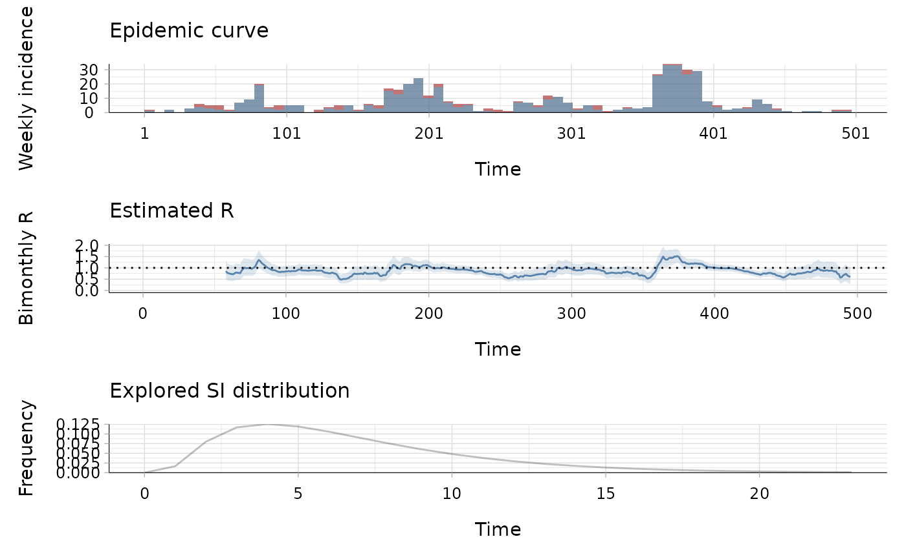

This data set gives:
the daily incidence of onset of symptoms of laboratory confirmed human infections with MERS-CoV in Saudi Arabia between the beginning of July 2014 and the end of December 2015, and
estimates of the mean and standard deviation of the serial interval for MERS.
A list of two elements:
incidence: a dataframe containing 495 days of observations with dates in the first column, and number of local (2nd column) and imported (3rd column) cases of MERS,
si: a list of estimates of the mean (mean_si) and standard deviation (std_si) of the serial interval for MERS.
The incidence data was extracted from the EMPRES I system from FAO
(Global Animal Disease Information System - Food and Agriculture Organization
of the United Nations, 2017). Note incidence on the first day was originally
made of one local case and zero imported cases; this has been modified to
zero local cases and one imported case in the dataset shown here so the
reproduction number can be estimated from the start using the function
estimate_R(). The serial interval parameters were those
estimated by Cauchemez et al. (2016).
Global Animal Disease Information System - Food and Agriculture Organization of the United Nations, 2017
Cauchemez S, Nouvellet P, Cori A, Jombart T, Garske T, Clapham H, Moore S, Linden Mills H, Salje H, Collins C, et al. 2016. Unraveling the drivers of MERS-CoV transmission. Proc Natl Acad Sci 113: 9081-9086.
## load data data("mers_2014_15") ## estimate the reproduction number (method "parametric_si") bimonthly_R <- estimate_R(mers_2014_15$incidence[,c("local", "imported")], method = "parametric_si", config = make_config( mean_si = mers_2014_15$si$mean_si, std_si = mers_2014_15$si$std_si, t_start = 2:(nrow(mers_2014_15$incidence)-8*7), t_end = (2:(nrow(mers_2014_15$incidence)-8*7)) + 8*7)) plot(bimonthly_R, legend = FALSE, add_imported_cases = TRUE, options_I = list(col = c("local" = "black", "imported" = "red"), interval = 7, # show weekly incidence ylab = "Weekly incidence"), options_R = list(ylab = "Bimonthly R"))# The first plot shows the weekly incidence, # with imported cases shown in red and local cases in black